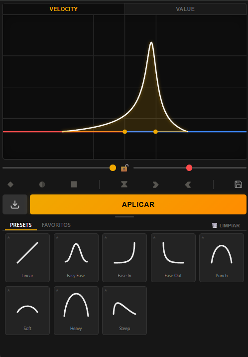
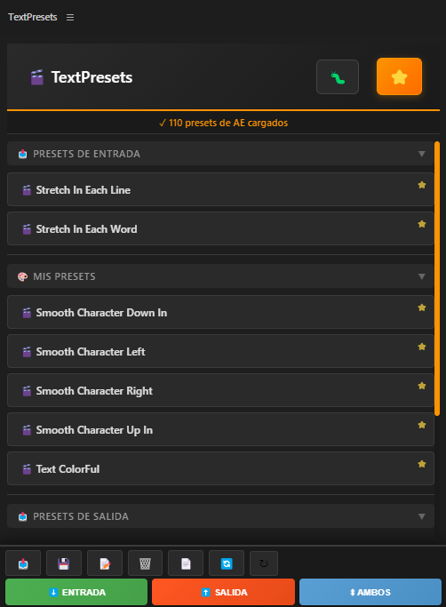
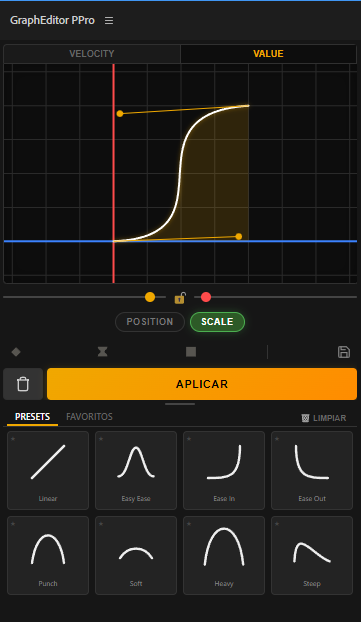
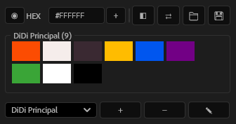
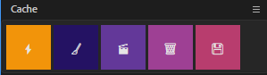

Herramientas que potencian tu creatividad.
He implementado estas funciones con IA y quería compartirlas con ustedes con mucho amor, para que la comunidad pueda usarlas, modificarlas y mejorarlas libremente.
Ver Proyectos
GraphEditor
La forma más intuitiva de pulir tus animaciones. Manipulación visual de curvas Bezier y velocidad con precisión quirúrgica.

TextPresets
Gestión avanzada de subtítulos y presets de texto personalizables. Automatiza estilos complejos con aplicación masiva en segundos.

GraphEditor PPro
Versión experimental funcional para Premiere Pro. Buscamos desarrolladores para romper las limitaciones técnicas de la plataforma.

Aura Pro
Biblioteca de colores inteligente. Gestión de paletas orgánicas con aplicación en un clic y sincronización con selección.

Cache Pro
La navaja suiza de rendimiento. Purga de caché, toggle de efectos y guardado con versionado en un solo panel.